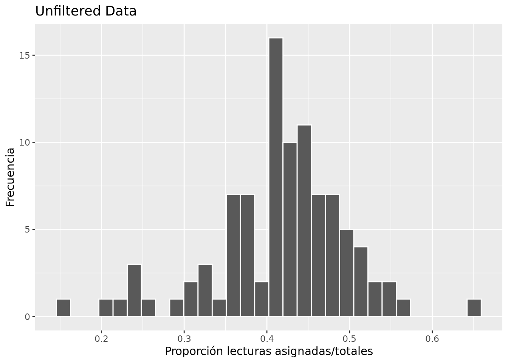
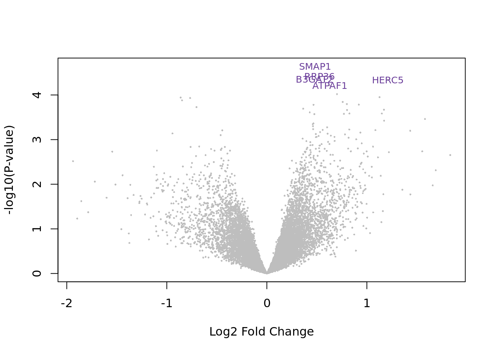

4 Transformación de datos
Una vez que los datos son legibles y manejables, podemos manipularlos de acuerdo al objetivo.
4.1 Crear una nueva variable categórica
Crear la categoría adult para dividir en dos rangos de edad:
young- menor a 60 añosold- mayor o igual a 60 años
rse_gene_SRP111481$adult <- factor(ifelse(rse_gene_SRP111481$sra_attribute.age < 60, "young", "old"))
table(rse_gene_SRP111481$adult)##
## old young
## 60 364.2 Filtrado
Muchos de los datos pueden contener información desviada que haga ruido en nuestro análisis, por lo tanto es necesario eliminarla. Para la filtración utilizaremos dos parámetros:
Por calidad de la librería: de acuerdo a la proporción de lecturas asignadas a genes/lecturas totales.
Por niveles de expresión: de acuerdo a niveles promedio de expresión de los datos y valores como el cpm (counts per million).
4.2.1 Calidad de la librería
Calculamos la proporción de genes asignados, donde valores cercanos a 1 indican mayor asignación de lecturas a genes. Dando a entender que la calidad de la librería es buena.
## Calcular la proporcion de genes para saber la calidad
rse_gene_SRP111481$assigned_gene_prop <- rse_gene_SRP111481$recount_qc.gene_fc_count_all.assigned / rse_gene_SRP111481$recount_qc.gene_fc_count_all.total
summary(rse_gene_SRP111481$assigned_gene_prop)## Min. 1st Qu. Median Mean 3rd Qu. Max.
## 0.1511 0.3725 0.4240 0.4166 0.4616 0.6476Podemos ver que tenemos proporciones desde 0.1511 hasta 0.6476.
## Salvar el objeto entero en caso de necesitar regresar a la version original
rse_gene_SRP111481_unfiltered <- rse_gene_SRP111481Además, analizando los cuartiles de cada rango en distintas variables, notamos que el primer cuartil de todas es ~0.3 por lo que podemos tomarlo como punto de corte.
## Comparar proporciones de cada grupo
## Por rango de edad
with(colData(rse_gene_SRP111481), tapply(assigned_gene_prop, adult, summary))## $old
## Min. 1st Qu. Median Mean 3rd Qu. Max.
## 0.2036 0.3725 0.4231 0.4153 0.4661 0.5604
##
## $young
## Min. 1st Qu. Median Mean 3rd Qu. Max.
## 0.1511 0.3764 0.4240 0.4186 0.4559 0.6476## Por etapa FIGO
with(colData(rse_gene_SRP111481), tapply(assigned_gene_prop, sra_attribute.figo_stage, summary))## $I
## Min. 1st Qu. Median Mean 3rd Qu. Max.
## 0.2290 0.3708 0.4131 0.4164 0.4552 0.6476
##
## $II
## Min. 1st Qu. Median Mean 3rd Qu. Max.
## 0.1511 0.3795 0.4423 0.4169 0.4666 0.5604Visualizando todas las proporciones nos damos cuenta de que la frecuencia de las proporciones menores son pocas, por lo tanto podemos eliminarlas.
Al ser un análisis de calidad, evité eliminar datos cercanos a uno aunque se alejaran de la distrbución.
## library("ggplot2")
plot_df <- as.data.frame(colData(rse_gene_SRP111481)[, "assigned_gene_prop"])
colnames(plot_df) <- "Calidad"
qplot(plot_df$Calidad, geom = "histogram", col = I("white"), xlab = "Proporción lecturas asignadas/totales", ylab = "Frecuencia", main = "Unfiltered Data")
Verificar cuántas variables se pierden.
## Estimación de punto de corte
table(rse_gene_SRP111481$assigned_gene_prop < 0.3)##
## FALSE TRUE
## 88 8## Eliminar aquellas muestras con proporciones bajas
rse_gene_SRP111481 <- rse_gene_SRP111481[, rse_gene_SRP111481$assigned_gene_prop > 0.3]4.2.2 Niveles de expresión
Necesitamos crear un objeto DGEList (Differential Gene Expression List) a partir de las lecturas. Con él podremos manipular e interpretar los niveles de expresión, y así, podemos eliminar datos ruidosos.
Es necesario que la normalizacion de datos se lleve a acabo desde este punto para evitar que las diferencias por normalización sean filtradas.
## library("edgeR")
dge <- DGEList(
counts = assay(rse_gene_SRP111481, "counts"),
genes = rowData(rse_gene_SRP111481)
)
## Calcular factores para normalización
dge_unnorm <- dge
dge <- calcNormFactors(dge)Utilizamos valores como el cpm para la filtración posterior.
## Convertir las cuentas a cmp con edgeR
cpm <- cpm(dge)
lcpm <- cpm(dge, log=TRUE)
## Tamaño de libreria aprox
L <- mean(dge$samples$lib.size) * 1e-6
M <- median(dge$samples$lib.size) * 1e-6
c(L, M)## [1] 8.417463 8.261144En nuestro dataset contamos con 373 genes (0.5% de los genes totales) que no se expresan, por lo tanto no son significativos para nuestro análisis y podemos eliminarlos.
table(rowSums(dge$counts==0)==9)##
## FALSE TRUE
## 63483 373Además determinarémos cuáles genes cuentan con un nivel de expresión significativo con la función filterByExpr.
# Salvar dge en caso de neceesitar el original
dge_unfiltered <- dge
keep.exprs <- filterByExpr(dge)
dge <- dge[keep.exprs,, keep.lib.sizes=FALSE]
dim(dge)## [1] 14984 88Cálculo del punto de corte a partir del cpm.
lcpm.cutoff <- log2(10/M + 2/L)
samplenames <- substring(colnames(dge), 12, nchar(colnames(dge)))
## library("RColorBrewer")
nsamples <- ncol(dge)
col <- brewer.pal(nsamples, "Paired")
par(mfrow=c(1,2))
plot(density(lcpm[,1]), col=col[1], lwd=2, ylim=c(0,0.26), las=2, main="", xlab="")
title(main="A. Raw data", xlab="Log-cpm")
abline(v=lcpm.cutoff, lty=3)
for (i in 2:nsamples){
den <- density(lcpm[,i])
lines(den$x, den$y, col=col[i], lwd=2)
}
legend("topright", samplenames, text.col=col, bty="n")
lcpm <- cpm(dge, log=TRUE)
plot(density(lcpm[,1]), col=col[1], lwd=2, ylim=c(0,0.26), las=2, main="", xlab="")
title(main="B. Filtered data", xlab="Log-cpm")
abline(v=lcpm.cutoff, lty=3)
for (i in 2:nsamples){
den <- density(lcpm[,i])
lines(den$x, den$y, col=col[i], lwd=2)
}
legend("topright", samplenames, text.col=col, bty="n")
## Niveles medios de expresión
gene_means <- rowMeans(assay(rse_gene_SRP111481, "counts"))
summary(gene_means)## Min. 1st Qu. Median Mean 3rd Qu. Max.
## 0.0 0.0 1.2 131.8 22.0 1966090.7## Eliminar genes no significativos
rse_gene_SRP111481 <- rse_gene_SRP111481[gene_means > 0.1, ]
## Dimensiones finales
dim(rse_gene_SRP111481)## [1] 45206 88Recordemos que las dimensiones originales eran de 63856 genes y 96 muestras, por lo tanto eliminamos un total de 45206 genes y 8 muestras.
Manteniendo el 70.79% de los genes originales.
## Porcentaje de genes que retuvimos
round(nrow(rse_gene_SRP111481) / nrow(rse_gene_SRP111481_unfiltered) * 100, 2)## [1] 70.79